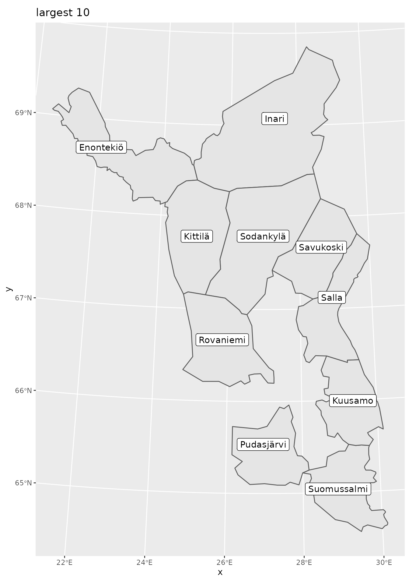
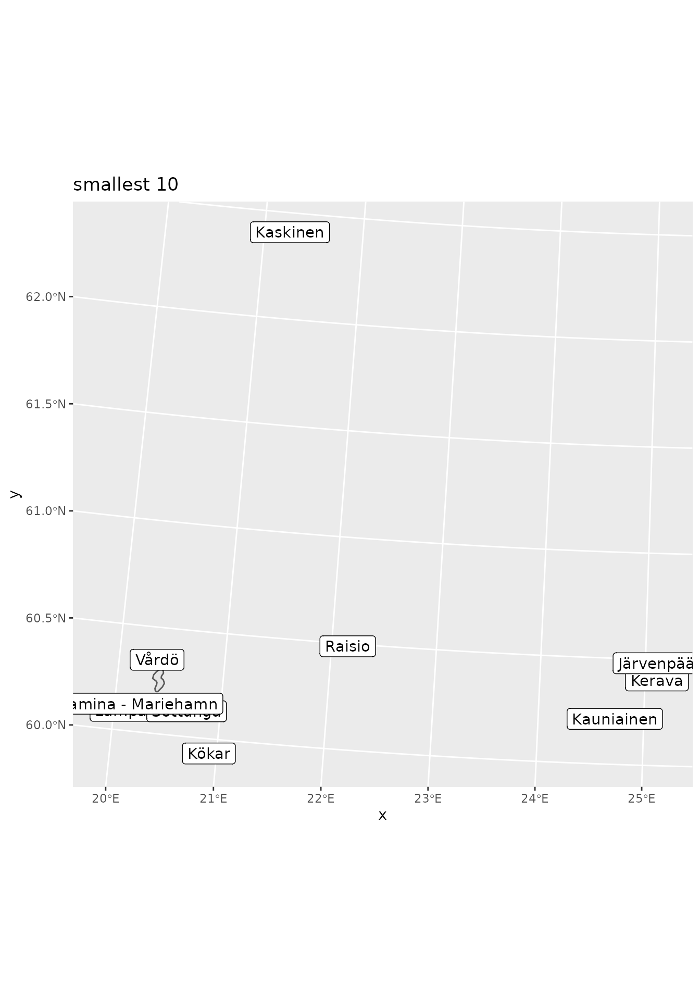
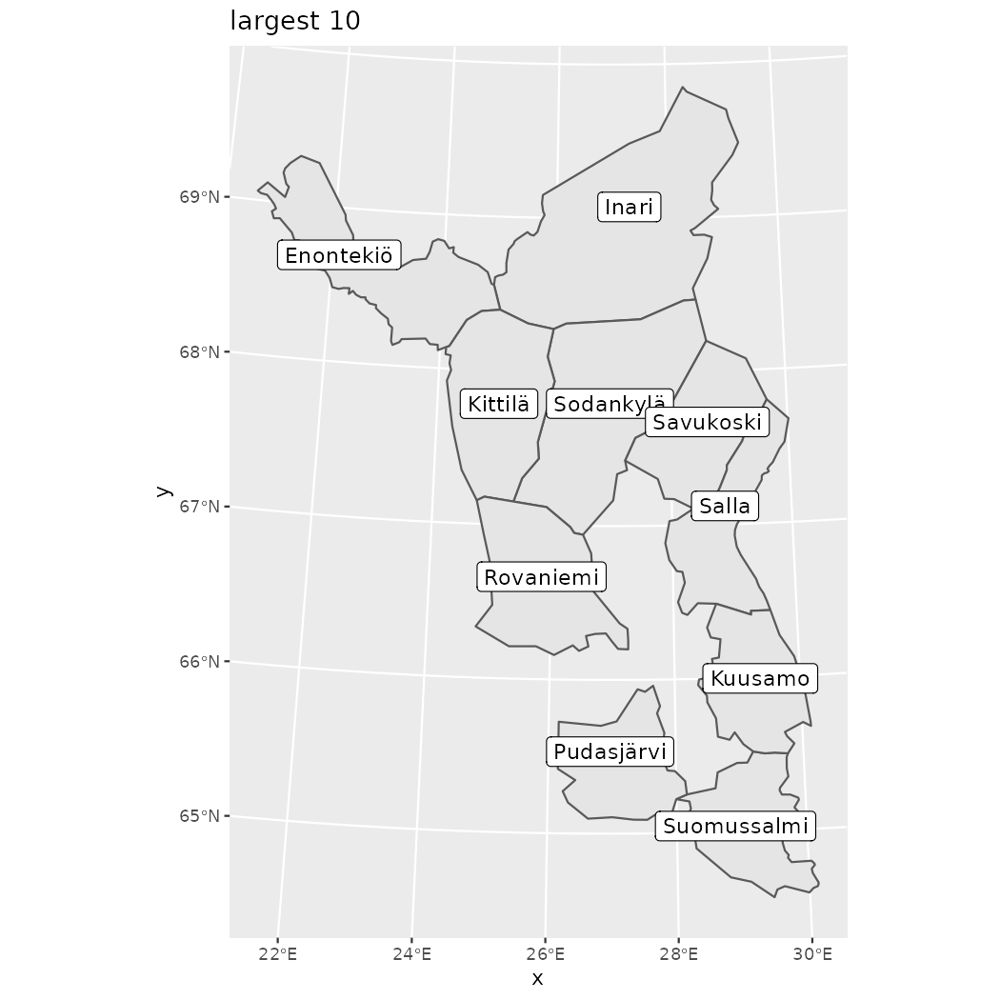
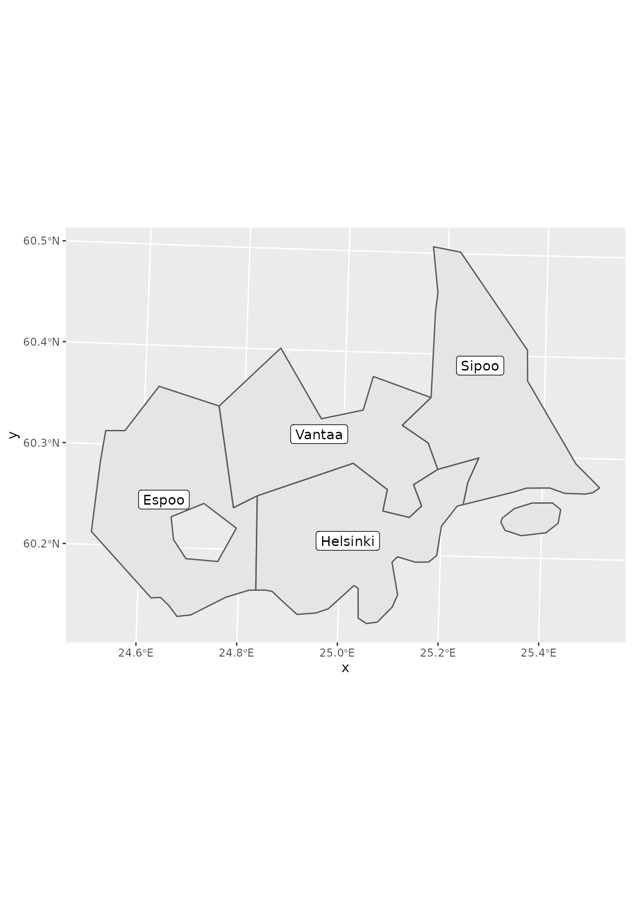
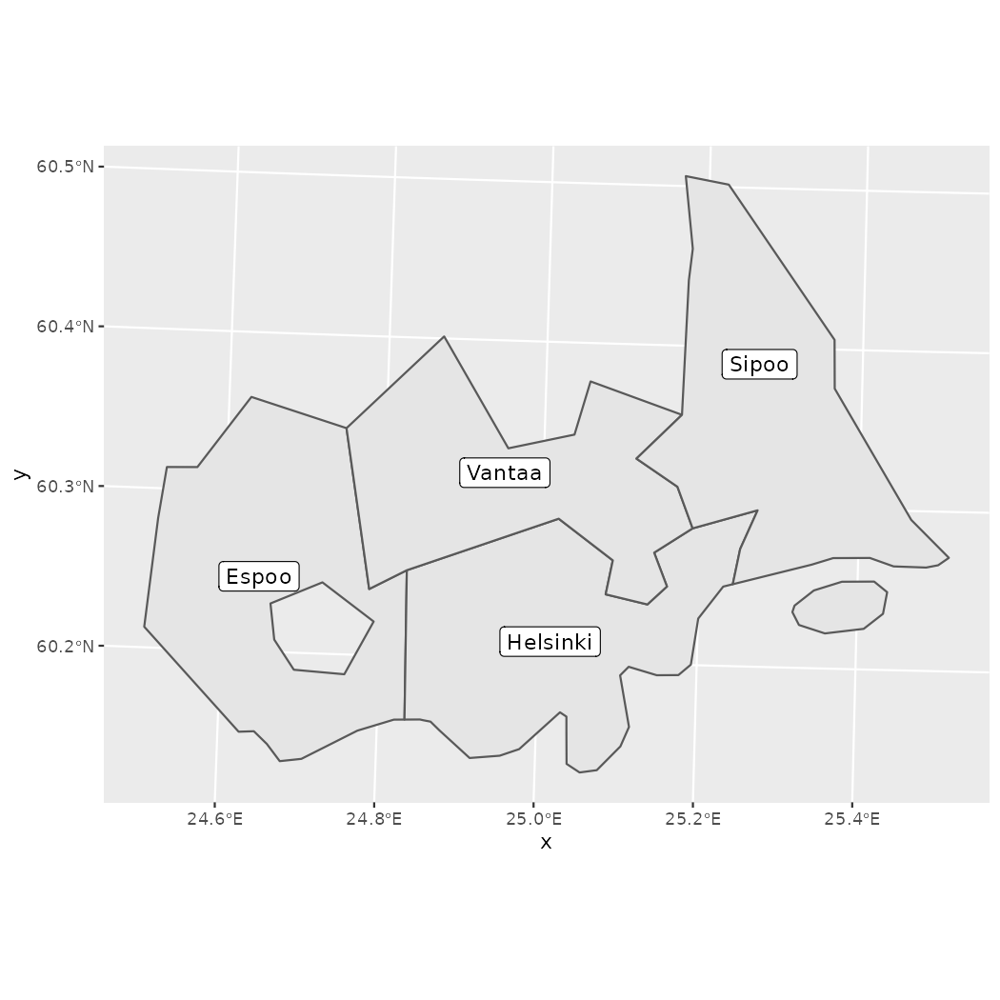
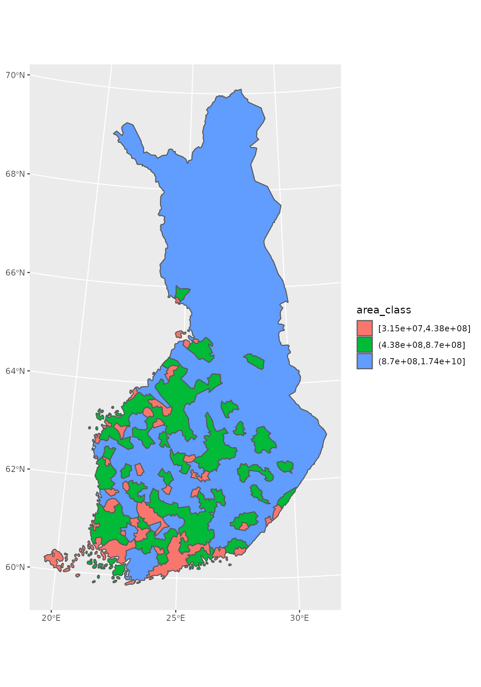
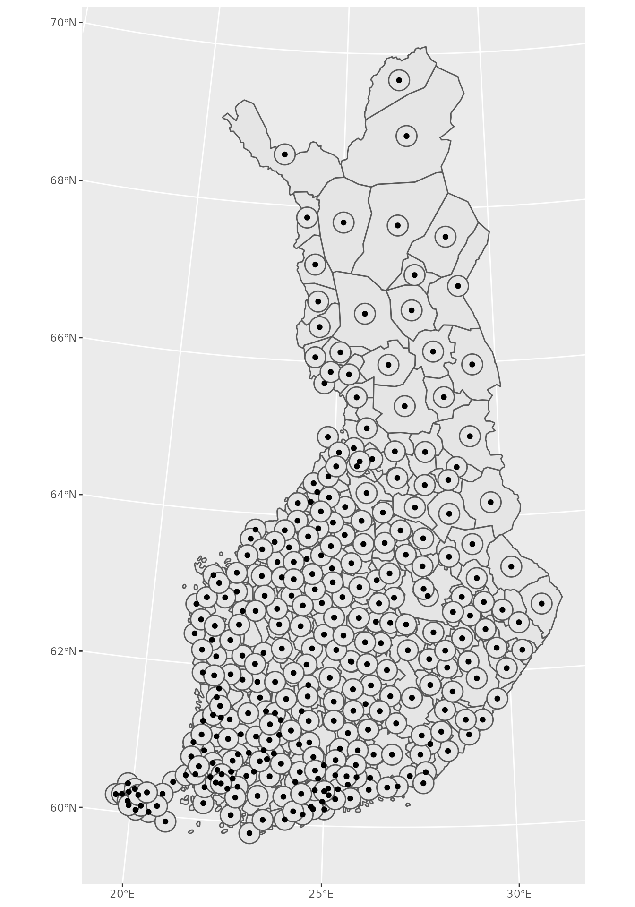
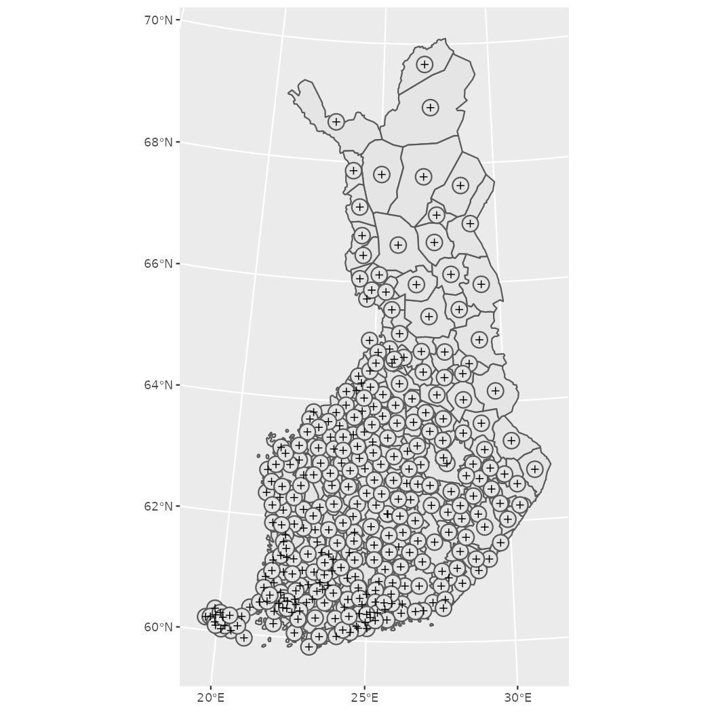
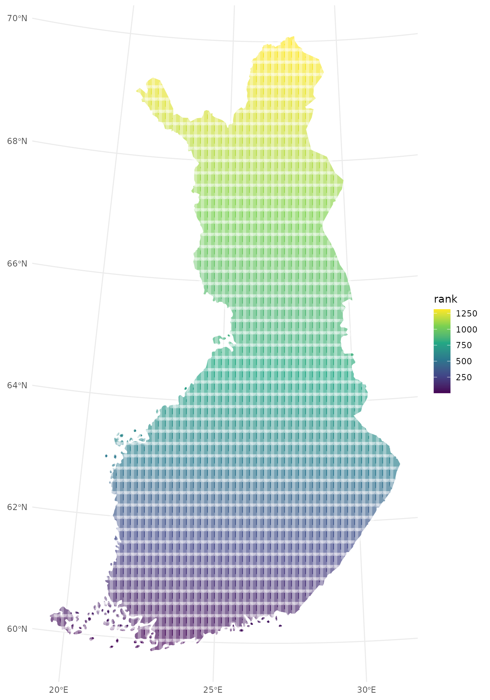

Spatial data manipulation and analysis R and geofi-package
Markus Kainu, Leo Lahti & Joona Lehtomäki
2021-02-11
Source:vignettes/geofi_spatial_analysis.Rmd
geofi_spatial_analysis.RmdMajority of the operations presented in this vignette derive from Marko Kallio’s course at CSC in February 2020 Spatial data analysis with R.
Installation
geofi is not yet in CRAN, but can be installed from Github using
remotes::install_github("ropengov/geofi")Coordinate reference systems
When using spatial data in R it necessary to have all data in same coordinate reference system (CRS). You can check the CRS of you sf-object with sf::st_crs()-function. All the data you can obtain using geofi is transformed automatically into EPSG:3067.
Area
To compute the area of polygons (municipality in this case), ordering them by size and plotting largest/smalles 10 can be as this.
# compute area
muni$area <- sf::st_area(muni)
# largest
muni %>%
arrange(desc(area)) %>%
slice(1:10) %>%
ggplot() +
geom_sf() +
geom_sf_label(aes(label = name_fi)) +
labs(title = "largest 10")
# smallest
muni %>%
arrange(area) %>%
slice(1:10) %>%
ggplot() +
geom_sf() +
geom_sf_label(aes(label = name_fi)) +
labs(title = "smallest 10")
Subsetting
You can subset data your plotting by subsetting your data in conventional filtering codes/names, or you can use geometric operations such as bounding box or intersection.
Lets imagine that we need a more detailed view of the metropolitan area of the Greater Helsinki that consist of the following municipalities: Espoo, Helsinki, Vantaa, Hyvinkää, Järvenpää, Kauniainen, Kerava, Kirkkonummi, Mäntsälä, Nurmijärvi, Pornainen, Sipoo, Tuusula and Vihti. You can subset the data just using the names of municipalities.
greater_helsinki <- c('Espoo','Helsinki','Vantaa','Hyvinkää',
'Järvenpää','Kauniainen','Kerava','Kirkkonummi',
'Mäntsälä','Nurmijärvi','Pornainen','Sipoo','Tuusula','Vihti')
greater_helsinki_polygon <- muni %>% filter(municipality_name_fi %in% greater_helsinki)
ggplot(greater_helsinki_polygon) +
geom_sf() +
geom_sf(data = point %>%
filter(teksti %in% toupper(greater_helsinki)))
Subsetting using bounding boxes
First, let’s create bounding box from greater Helsinki polygons.
bounding_box_polygon <- st_as_sfc(st_bbox(muni %>% filter(municipality_name_fi %in% greater_helsinki)))
ggplot(st_intersection(bounding_box_polygon, muni)) +
geom_sf() +
geom_sf(data = point %>% filter(teksti %in% toupper(greater_helsinki)))
Then, let’s use the point data (municipality central localities) to create the bounding box
bounding_box_point <- st_as_sfc(st_bbox(point %>% filter(teksti %in% toupper(greater_helsinki))))
ggplot(st_intersection(bounding_box_point, muni)) +
geom_sf() +
geom_sf(data = point %>% filter(teksti %in% toupper(greater_helsinki)))
Subsetting neigbours
Neighboring or intersecting objects can be found using st_intersection() in following manner where we plot Helsinki and it’s neighbors.
helsinki <- muni %>% filter(municipality_name_fi == "Helsinki")
neigbour_codes <- st_intersection(muni,helsinki) %>%
pull(municipality_code)
ggplot(muni %>% filter(municipality_code %in% neigbour_codes)) +
geom_sf() +
geom_sf_label(aes(label = municipality_name_fi))
Dissolving polygons (Union)
Often there is need to create alternative regional breakdown to existing ones and aggregating data accordingly. First we need to subset the required members and then dissolve them using st_union(). Below we classify municipalities in three equal size categories based on area, dissolve them and plot.
Lets first plot the smallest category as a single multipolygon.
muni$area_class <- cut_number(x = as.numeric(muni$area), n = 3)
#
muni %>%
filter(area_class == levels(muni$area_class)[1]) %>%
st_union() %>%
ggplot() +
geom_sf()
To union all three into same data you can use group_by and summarise

Centroids
Geometric operations include all operations which alter geometries, or result in new ones. Such commands include for instance simplifications, clipping, difference, intersection, computing centroids,
muni_centroids <- st_centroid(muni)
ggplot() +
geom_sf(data = muni) +
geom_sf(data = muni_centroids)
Buffers
Buffers can be taken from any ‘sf’ object. Here we take a fixed buffer of 5km from the centroid of each feature in major_basins.
muni_centroids_buffer <- muni_centroids %>%
st_centroid() %>%
st_buffer(dist = 15000)
ggplot() +
geom_sf(data = muni) +
geom_sf(data = muni_centroids_buffer) +
geom_sf(data = muni_centroids)
Creating regular grids (fishnets)
Fishnets or regular grids of points can be created with st_make_grid() function. It creates a regular grid over bounding box of an ‘sf’ object. Can be given a certain cellsize, or number of cells in x and y directions. ‘what’ tells the function what kind of regular grid is wanted (polygons, corners, centers). Fishnets of lines rather than polygons can be created simply by casting the polygons as “LINESTRING”s. The resulting polygon grid is an ‘sfc’ object, so it needs to be made ‘sf’ in order for us to add the ID-attribute.
fin <- muni %>% summarise()
grid_sf <- st_make_grid(fin, n=c(50,50), what="polygons") %>%
st_sf()
plot(grid_sf)
grid_clip <- st_intersection(grid_sf, fin)
# plot(grid_clip, max.plot=2)
grid_clip$rank <- 1:nrow(grid_clip)
ggplot(grid_clip) +
geom_sf(aes(fill = rank), color = alpha("white", 1/3), size = 3) +
scale_fill_viridis_c() +
theme_minimal()